NIKAT : RESISTENCIA
PERSONAL ACTIVO / SUPERVIVIENTES
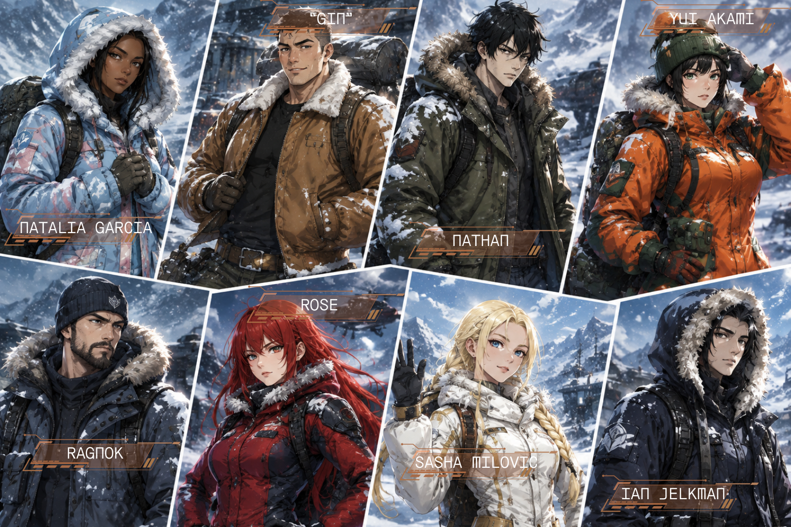
EQUIPO DE EXPLORACIÓN
Equipo de exploración tras la caída de la Tierra.
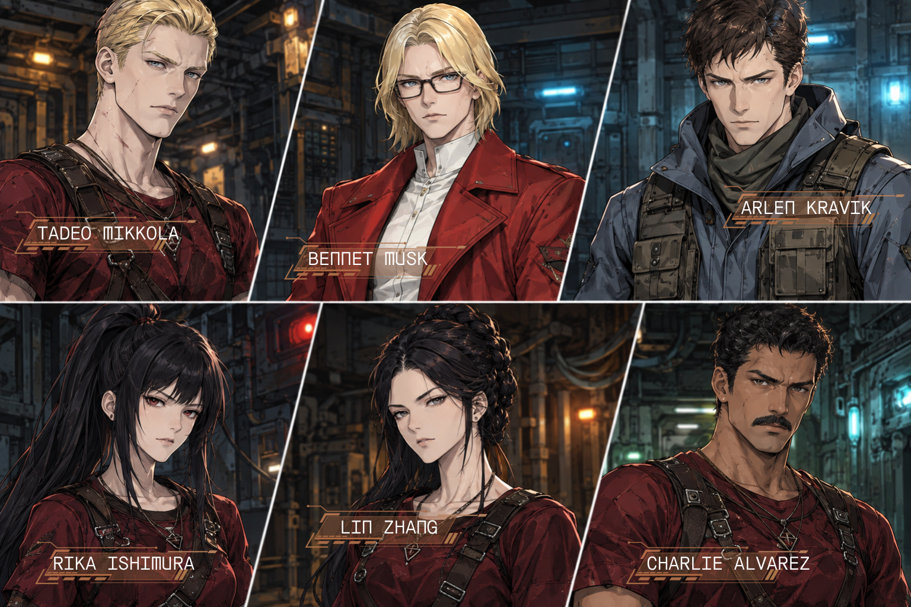
SUPERVIVIENTES BUNKER
Personal del bunker tras la caída de la Tierra.
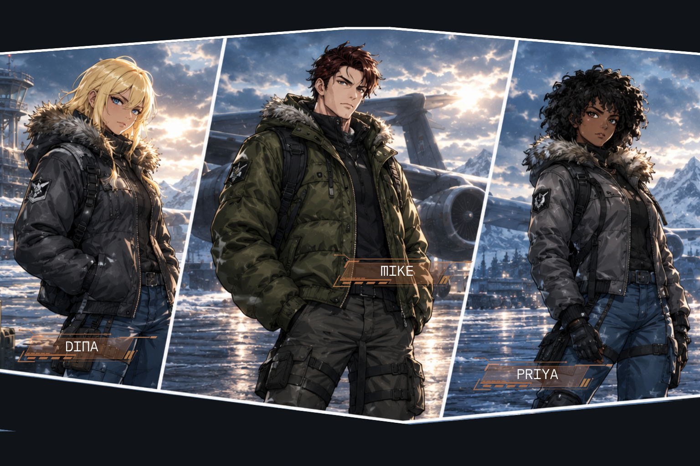
SUPERVIVIENTES ANCHORAGE
Personal de Anchorage tras la caída de la Tierra.
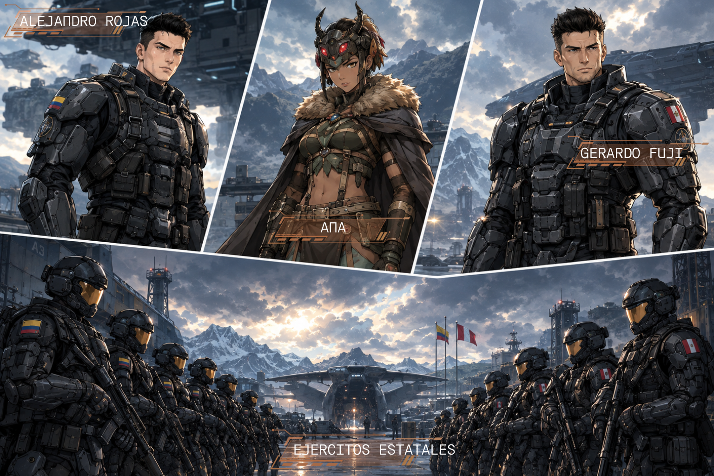
SUPERVIVIENTES PACIFICO
Personal de Guayaquil tras la caída de la Tierra.
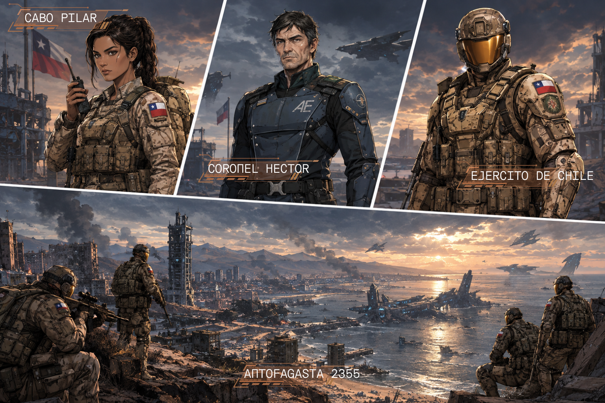
SUPERVIVIENTES ANTOFAGASTA
Personal de Antofagasta tras la caída de la Tierra.
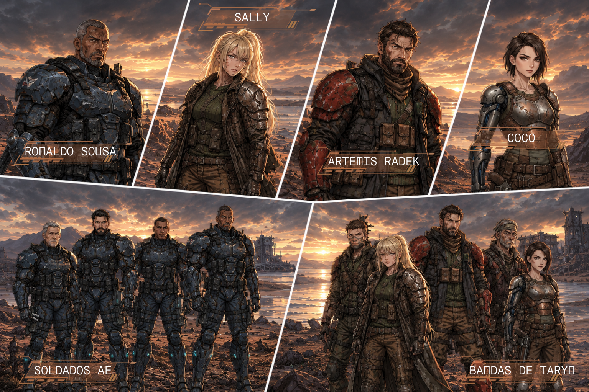
SUPERVIVIENTES COLUMBIA
Personal de Columbia tras la caída de la Tierra.
REMANENTES NIKAT
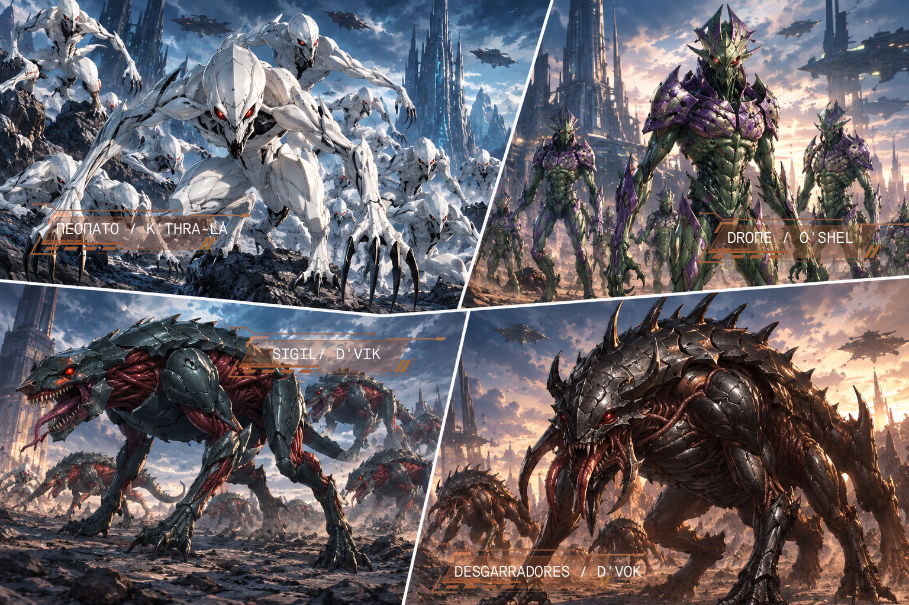
REMANENTES NIKAT
Unidades Nikat estandar.
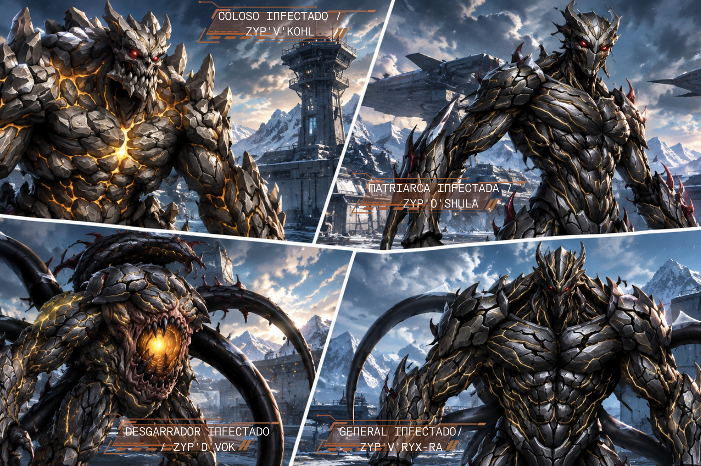
UNIDADES DE ELITE
Pseudo generales.
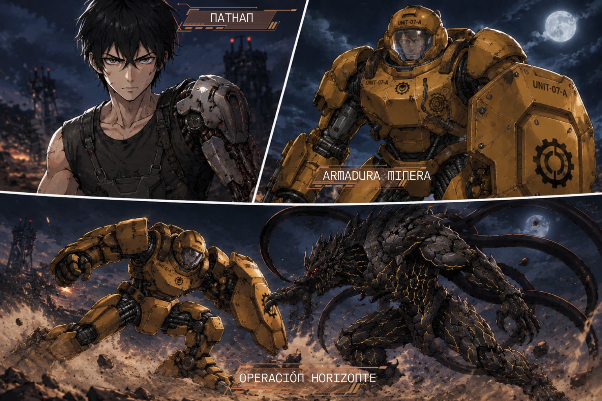
BATALLA DE ANTOFAGASTA
Batalla de antofagasta.
LOCACIONES DEL PACIFICO
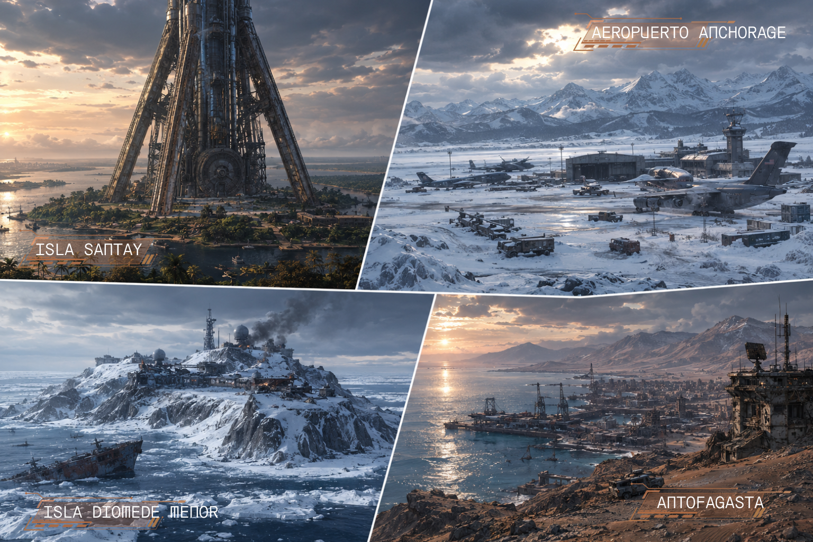
ESCENARIOS DE BATALLA
Base del ascensor espacial conectado a la EDE-40. Anchorage. Diomede. Antofagasta.
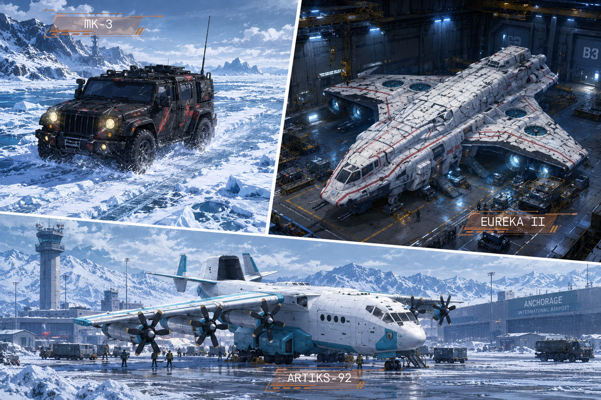
VEHICULOS DE APOYO
Vehiculos para la travesia por el pacifico.